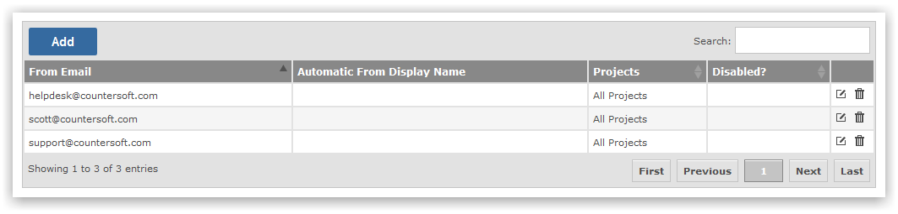
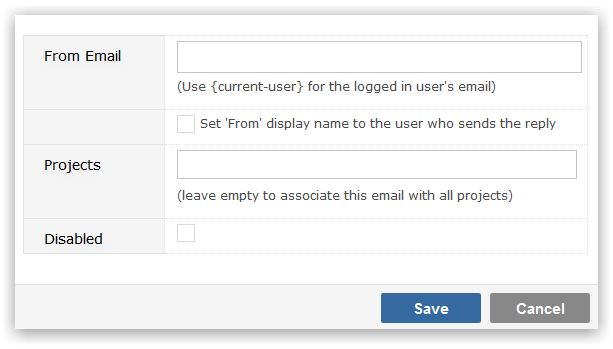

When a Gemini user send a reply back to the email sender, you can select who the reply came from. This allows you to personalize email responses back to your customers.
Add any reply from addresses as required.

The Email Reply facility within a ticket allows you to select who sent the reply.
If you do not see the Email Reply section please ensure Screens are confgiured correctly.